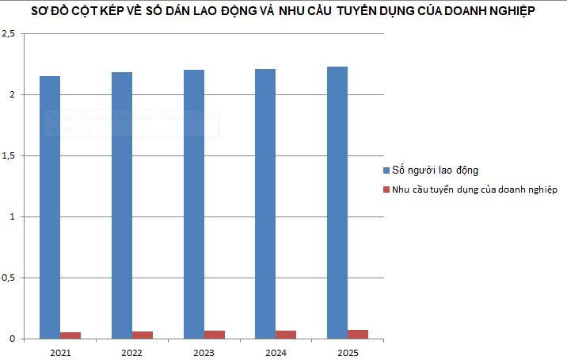
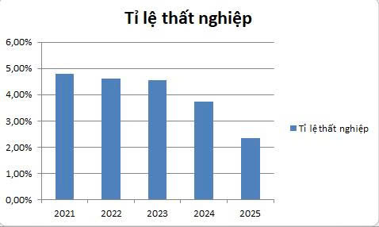
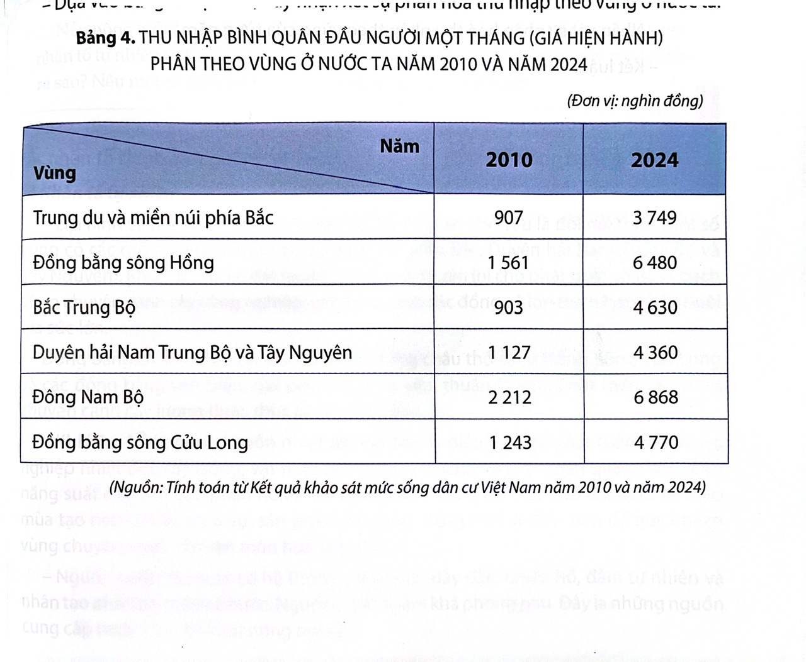

Đang có xu hướng chuyển dịch lao động từ nông nghiệp sang công nghiệp và dịch vụ.
Quá trình chuyển dịch cơ cấu lao động vẫn còn gặp nhiều khó khăn.
Lao động tương đối dồi dào nhưng nhu cầu tuyển dụng của doanh nghiệp còn hạn chế.
Cơ hội việc làm tại địa phương chưa đáp ứng đầy đủ nhu cầu của người lao động.
Một bộ phận lao động phải tìm việc ở nơi khác.
Một bộ phận lao động còn hạn chế về tay nghề và trình độ chuyên môn.
Lao động trẻ thiếu kinh nghiệm thực tế, chưa đáp ứng đầy đủ yêu cầu của doanh nghiệp.
Kỹ năng và khả năng thích ứng với công việc mới còn hạn chế.

Biểu đồ cột kép về số dân lao động và nhu cầu tuyển dụng của doanh nghiệp ở tỉnh Đồng Tháp( tỉnh Đồng Tháp và Tiền Giang cũ cộng lai khi chưa xác nhập và tỉnh Đồng Tháp mới khi đã xác nhập) trong giai đoạn 2021 – 2026 phản ánh bức tranh toàn diện về sự tăng trưởng quy mô và xu hướng dịch chuyển tích cực của mối quan hệ cung - cầu lao động tại Đồng Tháp.
Về nguồn cung, số người trong độ tuổi lao động duy trì ở mức cao và tăng đều từ 2,15 triệu người (năm 2021) lên 2,21 triệu người (năm 2024), và tiếp tục đạt 2,25 triệu người vào năm 2026 sau khi sáp nhập tỉnh.
Song song đó, dù nhu cầu tuyển dụng mới chỉ chiếm tỷ trọng nhỏ (do phần lớn người dân đã có việc làm từ trước), cột cầu lao động vẫn ghi nhận sự bứt phá mạnh mẽ từ đáy 0,055 triệu vị trí (năm 2021) lên 0,068 triệu (năm 2024) và dự kiến chạm mốc 0,075 triệu vào năm 2026.
Sự biến động đồng bộ này mang lại nhận xét cốt lõi rằng thị trường đang chuyển dịch thành công từ "thừa lao động" sang "thiếu hụt cục bộ" nhờ năng lực hấp thụ việc làm của kinh tế địa phương cải thiện rõ rệt.
Đặc biệt, cột mốc hợp nhất tỉnh năm 2025 chính là cú hích chiến lược giúp giải quyết bài toán việc làm tại chỗ bằng cách kết nối nguồn cung dồi dào với các khu công nghiệp vĩ mô, từ đó giảm sâu tỷ lệ thất nghiệp và tạo đà phát triển bền vững.

Tỷ lệ thất nghiệp tại Đồng Tháp có xu hướng giảm mạnh và liên tục từ mức đỉnh 4,80% (năm 2021) xuống còn 2,35% (năm 2025), phản ánh sự phục hồi mạnh mẽ và bứt phá của kinh tế địa phương [Vietnam Unemployment Rate By Provinces Annual CEIC].
Xu hướng này đang rất phù hợp, tích cực khi nhu cầu tuyển dụng của doanh nghiệp tăng đều qua từng năm, giúp hấp thụ hiệu quả lực lượng lao động dồi dào tại chỗ.
Đặc biệt, bước ngoặt sáp nhập vào năm 2025 đã kết nối thành công nguồn lao động lớn với các khu công nghiệp trọng điểm như Long Giang, Tân Hương, giúp người dân có việc làm ổn định ngay tại quê hương mà không cần ly hương lên các thành phố lớn.
Dù áp lực thất nghiệp đã được giải tỏa, số liệu này cũng báo hiệu thị trường đang chuyển dịch sang giai đoạn thiếu hụt lao động cục bộ, đòi hỏi tỉnh phải đẩy mạnh đào tạo nghề để đáp ứng kịp thời làn sóng đầu tư mới.
(Đây là sơ đồ về tỉ lệ thất nghiệp qua các năm của tỉnh Đồng Tháp và Tiềng Giang cũ trước khi xác nhập và Đồng Tháp mới khi đã xác nhập)
Đặc thù nông nghiệp: Mang tính mùa vụ, hết vụ việc làm giảm dù người dân rất bận rộn lúc cao điểm.
Lệch pha cung - cầu: Doanh nghiệp cần công nghệ và kỹ năng cao, trong khi một bộ phận lao động chưa đáp ứng được ("chưa có đúng người cho đúng việc").
Phân bố không đều: Cơ hội ở nông thôn hạn chế khiến lao động phải đi nơi khác.
Thứ nhất, phát triển mạnh các ngành có khả năng tạo nhiều việc làm. Tỉnh cần tiếp tục thu hút đầu tư vào công nghiệp chế biến nông sản, dịch vụ, thương mại, logistics và du lịch. Đặc biệt, cần phát huy lợi thế nông nghiệp bằng cách chế biến sâu và nâng cao giá trị nông sản, thay vì chỉ sản xuất rồi bán nguyên liệu. Khi giá trị của một sản phẩm tăng lên, cơ hội việc làm cũng có thể tăng theo.
Thứ hai, đào tạo nghề phải đi cùng nhu cầu thực tế. Nhà trường và cơ sở giáo dục nghề nghiệp cần phối hợp với doanh nghiệp để người học được trang bị đúng những kỹ năng thị trường cần. Người lao động cũng cần chủ động học tập, nâng cao trình độ và khả năng sử dụng công nghệ.
Thứ ba, đa dạng hóa sinh kế ở nông thôn. Bên cạnh sản xuất nông nghiệp, cần phát triển làng nghề, hợp tác xã, kinh tế hộ, du lịch cộng đồng và các ngành dịch vụ. Khi người dân có thêm việc làm ngoài mùa vụ, nguy cơ thiếu việc làm sẽ giảm và thu nhập cũng ổn định hơn.
Thứ tư, tăng cường kết nối cung – cầu lao động. Các phiên giao dịch việc làm, hoạt động tư vấn nghề nghiệp và giới thiệu việc làm cần được tổ chức thường xuyên hơn. Điều quan trọng không chỉ là đưa người lao động đến với doanh nghiệp, mà còn phải giúp họ biết mình phù hợp với công việc nào và cần bổ sung kỹ năng gì.
Cuối cùng, người lao động cần thay đổi từ tâm thế “chờ việc” sang “chủ động tạo cơ hội”: học nghề, học kỹ năng mới, mạnh dạn khởi nghiệp và tìm kiếm những hướng đi phù hợp với năng lực của bản thân.
Tóm lại vấn đề việc làm trên địa bàn tỉnh đồng tháp nói riêng và nước việt nam nói chung đang có có những gam màu tích cực nhưng song hành với đó vẫn là 1 số hạn chế cần được khắc phục và muốn giải quyết bài toán ấy, cần sự đồng hành của Nhà nước trong việc tạo môi trường phát triển, doanh nghiệp trong việc mở rộng cơ hội việc làm và người lao động trong việc chủ động nâng cao năng lực.
Bởi suy cho cùng, một công việc không chỉ nuôi sống một con người; một việc làm bền vững có thể nuôi dưỡng cả một gia đình, và hàng nghìn việc làm có thể tạo nên sức sống cho cả một quê hương.
Giải quyết thất nghiệp và thiếu việc làm trước hết là giúp người dân có thu nhập và ổn định cuộc sống. Nhưng ý nghĩa của việc làm còn lớn hơn một khoản tiền lương.
Một người có việc làm có thể chăm lo tốt hơn cho gia đình. Một gia đình có thu nhập ổn định sẽ có điều kiện đầu tư cho giáo dục và tương lai của con cái. Hàng nghìn người có việc làm sẽ tạo nên sức mua, sức sản xuất và động lực phát triển cho cả địa phương.
Đặc biệt, giải quyết việc làm còn giúp khai thác tốt nguồn nhân lực tại chỗ, hạn chế tình trạng người trẻ phải rời quê chỉ vì thiếu cơ hội. Khi người dân có thể học tập, làm việc và lập nghiệp ngay trên quê hương, Đồng Tháp không chỉ giữ được nguồn lao động mà còn giữ được những ước mơ và khát vọng phát triển của thế hệ trẻ.
Thu nhập bình quân đầu người của tất cả các vùng trên cả nước đều chứng kiến sự bứt phá mạnh mẽ qua các năm, phản ánh rõ nét thành tựu phát triển kinh tế và đời sống người dân ngày càng được nâng cao.
Vùng Trung du và miền núi phía Bắc tăng từ 907 nghìn đồng (2010) lên 3.749 nghìn đồng (2024) (tăng gấp khoảng 4,1 lần).
Vùng Bắc Trung Bộ có tốc độ vươn lên rất ấn tượng, tăng từ 903 nghìn đồng lên 4.630 nghìn đồng (tăng hơn 5 lần).
Vùng Đông Nam Bộ và Đồng Bằng Sông Hồng tiếp tục khẳng định vị trọng điểm dẫn đầu cả nước về giá trị tuyệt đối, tăng từ 2.212 nghìn đồng lên 6.860 nghìn đồng và từ 1561 lên 6840
Chênh lệch vùng miền sâu sắc: Ở mỗi thời điểm, bức tranh thu nhập luôn tồn tại sự phân hóa rõ rệt. Nhóm các vùng kinh tế đầu tàu (Đông Nam Bộ, Đồng bằng sông Hồng) luôn giữ đỉnh bảng với mức thu nhập cao vượt trội; trong khi các khu vực có địa hình khó khăn (như Trung du và miền núi phía Bắc hay Tây Nguyên) thường có mức thu nhập thấp hơn đáng kể.
Khoảng cách tuyệt đối bị nới rộng: Do điểm xuất phát ban đầu giữa các vùng không đồng đều, khoảng cách chênh lệch về giá trị tiền tệ thực tế giữa vùng cao nhất và vùng thấp nhất ngày càng doãng ra theo thời gian, cho thấy sự tăng trưởng chưa thực sự đồng đều về tốc độ giữa các vùng.

Sự gia tăng thu nhập trên phạm vi toàn quốc là minh chứng sinh động cho sự đi lên của nền kinh tế đất nước.
Tuy nhiên, bài toán phân hóa thu nhập giữa các vùng vẫn còn đó, phản ánh sự chênh lệch về trình độ phát triển kinh tế, cơ cấu lao động và tiềm năng thu hút đầu tư giữa các khu vực trong cả nước vì vậy đây là đề tài cần được bàn luận để đựa ra những giải pháp trọng tâm cải thiện nền kinh tế đồng điệu trên cả nước